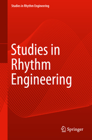

Conference Publications and Special Issues




Notice **:For preparing the final manuscript in camera-ready submission, the maximum page limit set by the springer is 10.
Paper Submission Deadline: 16 August 2022
Acceptance Notification:01 October 2022
Camera Ready Submission:12 October 2022
Registration Period:01 Oct 2022 - 10 Oct 2022
For wire transfer:
Account Name:TBA
Current Accounting No:TBA
Bank Routing No:TBA
Sonali Bank Limited
Mawlana Bhashani Science and Technology university
Santosh, Tangail-1902
| # | Author Types | Amounts |
|---|---|---|
| 1 | Professional (International) | 100 USD |
| 2 | Student (International) | 75 USD |
| 3 | Professional (Local) | 3000 BDT |
| 4 | Student (Local) | 2500 BDT |
| 5 | Participants (Co-author) | 1500 BDT |
Notice **:Participants will get Certificate of Participation and a Conference kit
Best Paper Award: 10000 BDT
1st Runner Up:7000 BDT
2ndRunner Up: 5000 BDT
Grants
Student Registration grant will be given based on the quality of the paper, reviewer comments, necessity, and available fund
"TCCE" conference focuses on the empirical, experimental, theoretical and application aspects of various innovations in computational and cognitive engineering. It aims to provide an opportunity to share research findings among scholars, experts, specialists from academia and industry working in multidimentional areas of applied sciences, engineering and technologies. 1st TCCE was held in the Central University of Haryana (CUH), India. In this year, TCCE-2022 will be held in the Faculty of Engineering, Mawlana Bhashani Science and Technology University (MBSTU), Tangail, Bangladesh during 18-19 December, 2022.
With increasing complex situations being modelled to find reasonable answers, role of computations and cognitive learning is becoming very important. The objective of the conference is to narrow down the gaps by bringing practitioners and scientists together. so as to focus on the recent trends in computational and cognitive engineering. The conference will further help:
|
# To provide a forum for exchange of ideas and insights by mathematicians, engineers, scientists, and researchers | |
|
# To share fresh perspective on problem-solving in current research areas | |
|
# To present various computational and cognitive modelling approaches in the areas of health, education, finance, environment, engineering, commerce and industry | |
|
# To promote networking opportunities among experts in various disciplines and encourage interdisciplinary research |

The topography of the land with Mawlana Bhashani Science and Technology University's gentle and plains is sooting to the eye. The Prottoy Ekattor statue is situated in our campus. MBSTU is covered with various natural sceneries Like It has a pond which called is "Shahjaman Dighi" and "Hatir kobor", "Playground" etc. The most notification is that The tomb of Majlum Jananeta Mawlana Abdul Hamid Khan bhashani which is situated in the campus. There are a lots of beautiful sceneries which attract visitors like 'Bijoy Angon', 'Mukto Monch' etc. Many people visit this campus everyday. The beauty of this our university attracts tourists.
Cultural activities at Mawlana Bhashani Science and Technology University are performed mostly at Muktomancha. There is a music band like drubatara. There are two auditoriums which one is under Criminology and Police Science Department and another is under Environmental Science and Resource Management Department.
Mawlana Bhashani Science and Technology University with a half-dozen residential halls and a few more under construction is mandated to provide residential accommodation to each and every student with separate halls for the female students. Each hall has its own administrative system headed by a Provost and is equipped with facilities like playground, rooms for indoor games, the dining hall etc.
| Cognitive Psychology and Cognitive Neuroscience |
| Computational Neuroscience |
| Artificial Intelligence, Soft Computing |
| Signal Processing |
| Cryptography, Image Processing, Coding Theory |
| Theory and Applications |
| Information Retrieval and Applications |
| Health informatics |
| Mathematical Biology, Green Computing |
| Distributed and Cloud Computing |
Please submit your work here: click here
All accepted papers will be published by Springer as a volume of the series of Springer Nature AISC. (SCOPUS indexed)
Authors should consult Springer’s authors’ guidelines and use their proceedings templates, either for LaTeX or for Word, for the preparation of their papers. Springer encourages authors to include their ORCIDs in their papers.
Authors are strongly encouraged to use Springer AISC manuscript submission guidelines (available here) for the initial submissions. All papers must be submitted electronically in PDF and DOC/RTF format in the Springer AISC style.
Style files can be download here:
Although we accept submissions in the form of PDF, PS, and DOC/RTF files, you are strongly encouraged to generate a PDF version for your paper before submitting it. It is highly recommended to use LaTeX to prepare your PDF submission.
Step 1: Please prepare your final manuscript according to the Springer templates. You must include all the comments suggested by the reviewers. Please see the REVIEWERS’ COMMENTS for your paper via ProConf Author’s portal, which MUST be addressed. NOTE: If the reviewer’s comments have not been addressed, your paper will NOT be included in the proceedings.
Step 2: Prepare author’s response to the reviewers’ comments in a separate file (.pdf)
Step 3: Make sure that you have made a zip file named as PaperID.zip. The zip file includes the following materials:
Step 4: Please upload your zip file using your authors portal.
Download and print Consent to Publish, CTP (or copyright) letter. Then sign on the CTP and upload scan copy. Please DO NOT type or print your name as sign on CTP. The sign should be hand-sign.
Make sure that ALL images/illustrations are from you and drawn by you [even if you want to redraw from another document, make sure that you give reference properly, and take the permission (if needed)]. if there is no content being used in the paper for which the permission is required you must fill NIL in the form, sign and upload in the zip folder.
Each paper must be registered by the First author/corresponding author. Failing to do so, your paper will be withdrawn and not be included in the proceedings. The online registration will be opened soon and you will be notified once it is opened. However, note that the REGISTRATION INFORMATION FORM is needed to be provided during your final paper submission.
Student Registration grants will be given based on the quality of the paper, reviewer comments, necessity, and available funds.
The accepted paper may be submitted for the possible publication (after more than 40% modification) in the –
FACULTY OF ENGINEERING, MAWLANA BHASHANI SCIENCE & TECHNOLOGY UNIVERSITY, TANGAIL, BANGLADESH
Copyright © 2022 tcce-2022, All Rights Reserved. Contact No:+88 01783 567890, +88
01711 932323
For more query: info-tcce@mbstu.ac.bd
Find Us on Facebook: